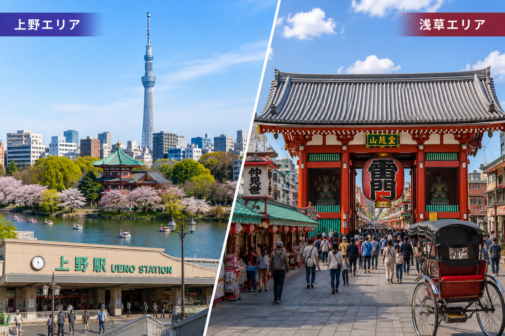

Ueno & Asakusa Accommodation Market Analysis

Ueno and Asakusa form the core of Tokyo's historic tourism district, attracting millions of visitors each year. This area combines world-class museums, traditional temples, shopping streets, and the natural beauty of Ueno Park 窶・creating one of the most concentrated accommodation markets in Japan. This analysis examines the current state and outlook for accommodation investment in the Ueno-Asakusa corridor.
Visitor Numbers and Demand Drivers
Asakusa's Senso-ji Temple alone draws over 30 million visitors annually, making it one of the most visited spiritual sites in the world. Ueno Park, home to several major museums and Tokyo Zoo, attracts a similarly large audience. The area benefits from both domestic and international tourism, with foreign visitor numbers continuing to grow as Japan's inbound tourism expands. The demand for accommodation in this area is consistently high year-round.
Accommodation Supply and Competition
Accommodation supply in Taito Ward (which includes both Ueno and Asakusa) is among the highest in Tokyo, spanning luxury hotels, business hotels, hostels, and private lodging. Competition is significant, particularly in the mid-range segment. However, the sheer volume of visitor demand means well-operated properties can achieve strong occupancy rates. Differentiation through service quality, unique design, or specific guest targeting is key to standing out.
Regulatory Environment
Taito Ward has implemented its own private lodging regulations that operators must navigate. The ward issues area cards (chiku card) for certain zones, allowing extended operating days beyond the standard 180-day limit. However, compliance requirements including local management company designation and neighbor notifications must be carefully followed. Hotel-licensed properties in the area face fewer operational restrictions and can operate year-round.
Growth Potential and Investment Outlook
The Ueno-Asakusa area continues to see infrastructure improvements and tourism promotion. The development of new attractions, improved transport links, and ongoing urban renewal projects all support continued growth in visitor numbers. For accommodation investors, the area offers a proven market with high demand, but success requires careful property selection, appropriate licensing strategy, and professional operations management.
For accommodation launch, operations, or investment 窶・consult Kaisei
Consultations are free. Feel free to reach out.
Free Consultation